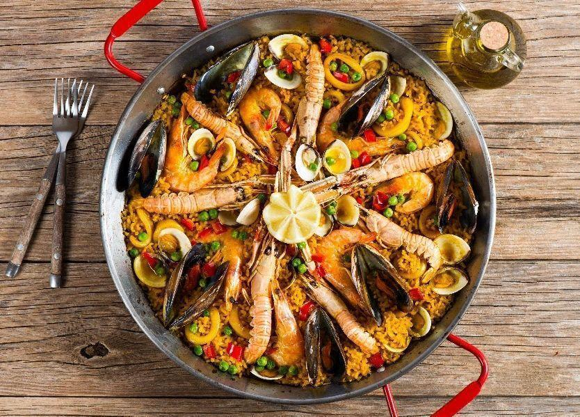

Paella de frutos do mar

Ingredientes
- 500 g de lula em anéis
- 500 g de camarão sem casca
- 500 g de mexilhão
- 6 xícaras de água quente
- 1/2 xícara de vinho branco
- 3 xícaras de arroz espanhol, arroz de grão médio, ou arroz parboilizado
- 1/2 pimentão vermelho
- 1/2 pimentão amarelo
- 200 g de ervilha
- 2 tomates
- 1 colher de sopa de páprica picante
- 2 dentes de alho
- 1 cebola picada
- 1 pitada de açafrão
- 1 suco de limão
- 1 colher de sopa de azeite de oliva
Modo de preparo
- Coloque o açafrão na água quente e aguarde cerca de 10 minutos para soltar o sabor e cor. Depois adicione o suco de limão. Reserve.
- Na panela, frite, no azeite, o alho, o tomate, a cebola, o pimentão vermelho e o pimentão amarelo.
- Acrescente a páprica, os anéis de lula e os mexilhões.
- Tempere com sal e pimenta.
- Junte o arroz e o vinho branco. Deixe o vinho secar.
- Acrescente a infusão de açafrão e suco de limão.
- Cozinhe em fogo baixo até o arroz ficar cozido. Reserve.
- Em outra panela, frite os camarões no azeite com sal e pimenta do reino.
- Coloque os camarões, coentro, ervilhas na panela e misture. Pronto!
Tortilla de batata
Ingredientes
- 1/2 xícara de chá de oléo
- 2 batatas médias cortadas em rodelas finas
- 2 cebolas médias cortadas em rodelas finas
- 6 ovos batidos
- Tempero a gosto
- 1 colher de chá de sal
Modo de preparo
- Em uma frigideira grande, coloque o óleo e leve ao fogo alto para aquecer.
- Junte as batatas e frite, aos poucos por 3 minutos de cada lado, ou até que fiquem douradas.
- Escorra em papel absorvente e reserve.
- Acrescente as cebolas e refogue por 3 minutos, ou até murcharem.
- Escorra
- Na mesma frigideira, coloque os ovos previamente temperados com o sal e temperos a gosto, e coloque as batatas e as cebolas.
- Frite em fogo médio por 5 minutos, ou até que a parte superior esteja consistente.
- Vire com o auxílio de um prato e deixe por 5 minutos.
- Retire do fogo e sirva em seguida.
Gazpacho
Ingredientes
- 5 tomates maduros
- 1 pepino japonês
- 1/4 de pimentão vermelho
- 1 fatia de pão italiano amanhecido
- 1 dente de alho
- 2 colheres (sopa) de vinagre de vinho tinto
- 1/2 colher (sopa) de azeite
- sal e pimenta-do-reino moída na hora a gosto
Modo de preparo
- Lave e seque os tomates, o pimentão e o pepino. Corte os tomates ao meio, descarte as sementes e corte as metades em pedaços médios. Descarte as pontas e corte o pepino em pedaços médios. Corte aproximadamente 1/4 do pimentão em duas fatias. Descasque o dente de alho.
- No liquidificador, bata todos os ingredientes, até ficar uma mistura lisa. Sirva a seguir com croûtons. (É só tostar cubinhos de pão na frigideira com azeite ou manteiga).
Cocido Madrileño

Ingredientes
- 2 xícaras (chá) de grão de bico
- 300 g de lombo salgado
- 300 g de paleta ou acém
- 150 g de toucinho defumado
- 1 paio
- 1 linguiça portuguesa
- 1 repolho pequeno em gomos
- 4 batatas médias
- 2 cenouras
- 1 cebola média cortada em rodelas largas
- sal e azeite
Modo de preparo
- Deixe o grão de bico e o lombo de molho de véspera em águas separadas. Troque a água do lombo algumas vezes. No dia seguinte, cozinhe o grão de bico, o lombo, a carne de vaca e o toucinho cortados em cubos em panela de pressão por cerca de 20 minutos.
- Em uma panela funda, aqueça o azeite e refogue a linguiça e o paio cortados em rodelas. Acrescente a cebola e refogue mais um pouco.
- Junte o grão de bico, as carnes e o caldo em que cozinharam. Acrescente o repolho e as cenouras cortadas em rodelas. Deixe cozinhar durante 10 minutos e acrescente as batatas cortadas em fatias grossas. Prove e acerte o sal. Sirva assim que tudo estiver cozido.
Jamón

Ingredientes
- 1 pão tipo baguete
- 1 dente de alho inteiro
- 1 tomate
- 8 fatias de presunto cru
- azeite a gosto
Modo de preparo
- Preaqueça o forno a 180 ºC (temperatura média).
- Numa tábua, corte a baguete em 4 pedaços iguais. Corte cada pedaço ao meio, no sentido do comprimento, de maneira a obter 8 fatias.
- Coloque as fatias de pão numa assadeira e leve ao forno preaquecido para assar por 20 minutos (ou até que comecem a dourar).
- Retire as fatias do forno. Descasque o alho e passe rapidamente sobre cada fatia de pão.
- Corte o tomate ao meio e esfregue sobre cada fatia de pão. Acrescente uma fatia de presunto, regue com azeite e sirva a seguir.